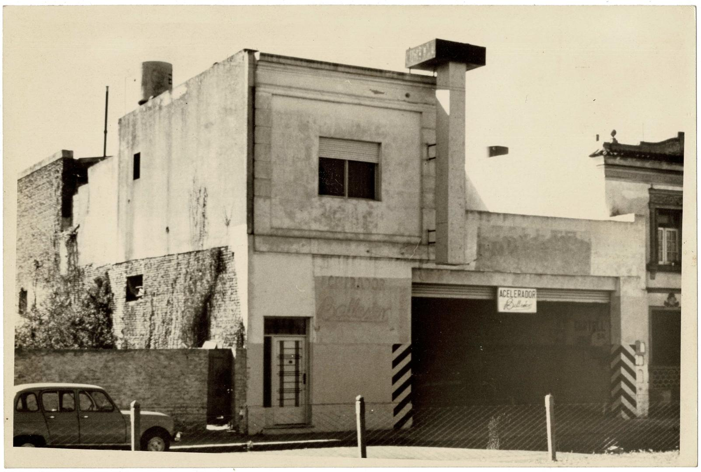
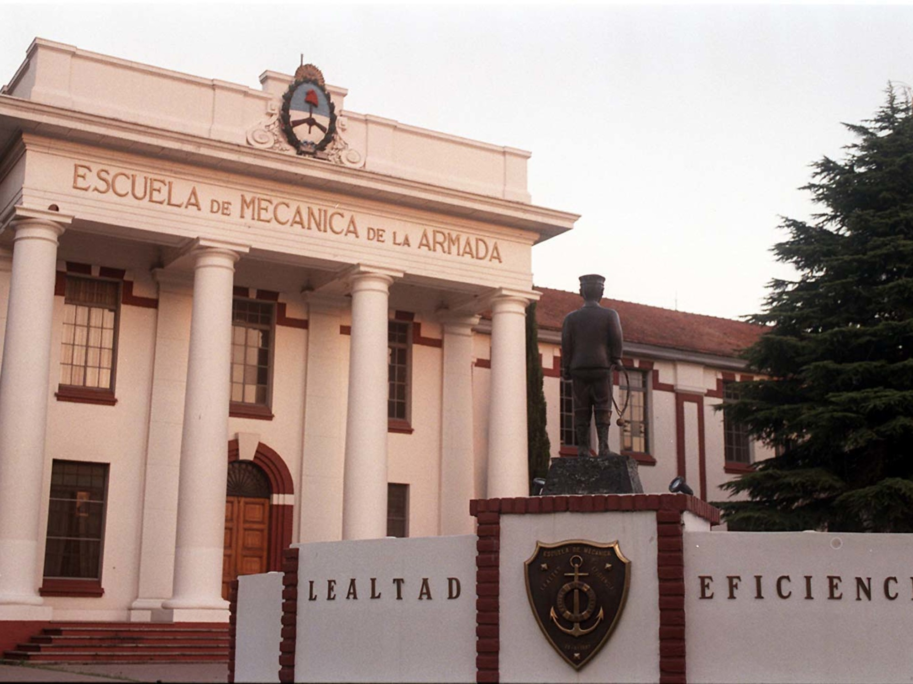

Dictadura en Argentina
El inicio de un gobierno autoritario

El 24 de marzo de 1976 comenzó en Argentina una dictadura militar que tomó el poder mediante un golpe de Estado.
Este período, conocido como el Proceso de Reorganización Nacional, estuvo marcado por la represión, la censura y la violación de los derechos humanos.
Miles de personas fueron secuestradas, torturadas y desaparecidas por el Estado.
Este fue liderado por el teniente general Jorge Rafael Videla(1976-1981) uno de los mas conocidos.
 General del ejercito, Roberto Viola(1981-1981)
General del ejercito, Roberto Viola(1981-1981)
 El teniente general Leopoldo Fortunato Galtieri(1981-1982) El presidente qué presento la guerra a Reino Unido por las Islas Malvinas el 2 de Abril de 1982.
El teniente general Leopoldo Fortunato Galtieri(1981-1982) El presidente qué presento la guerra a Reino Unido por las Islas Malvinas el 2 de Abril de 1982.
 Terminando el gobierno militar con Reynaldo Benito Bignone(1982-1983) quien llamo a elecciones democraticas el 30 de octubre de 1983.
Terminando el gobierno militar con Reynaldo Benito Bignone(1982-1983) quien llamo a elecciones democraticas el 30 de octubre de 1983.

Desaparecidos

Durante este gobierno de facto, hubo un estimado de 30.000 desaparecidos, por la causa de tener opinion diferente a la del gobierno, estos eran sorprendidos en sus casas a altas horas de la noche y transportados en los baules de los Ford Falcon verde, estos eran llevados a centros clandestinos de detencion, donde eran torturados y maltratados, los mas conocidos son Automotores Orletti, un taller mecanico que ocultaba un centro de tortura y exterminio,y la ESMA(Escuela de Mecanica de la Armada).

Estos secuestros podian llevarlos a los proclamados "Vuelos de la muerte", en los que se subian a los detenidos a un Hercules (Avion de las Fuerzas Aereas Argentinas) y lanzados desde gran altura hacia el Rio de la Plata.
Esto era parte del Plan Condor de Estados Unidos, para exterminar el comunismo de America.
Abuelas/Madres de Plaza de Mayo

Frente a esta situación, surgieron organizaciones de derechos humanos como las Madres de Plaza de Mayo y las Abuelas de Plaza de Mayo. Estas mujeres comenzaron a reunirse en la Plaza de Mayo para reclamar por sus hijos y nietos desaparecidos,caminaban dando vueltas alrededor de la plaza, con un pañuelo blanco en la cabeza que simbolizaba el pañal de los bebes desaparecidos. Entre sus principales referentes se destacaron Hebe de Bonafini y Estela de Carlotto, quienes se convirtieron en símbolos de la lucha por la memoria, la verdad y la justicia. Gracias a su trabajo, se logró recuperar la identidad de muchos nietos apropiados durante la dictadura.